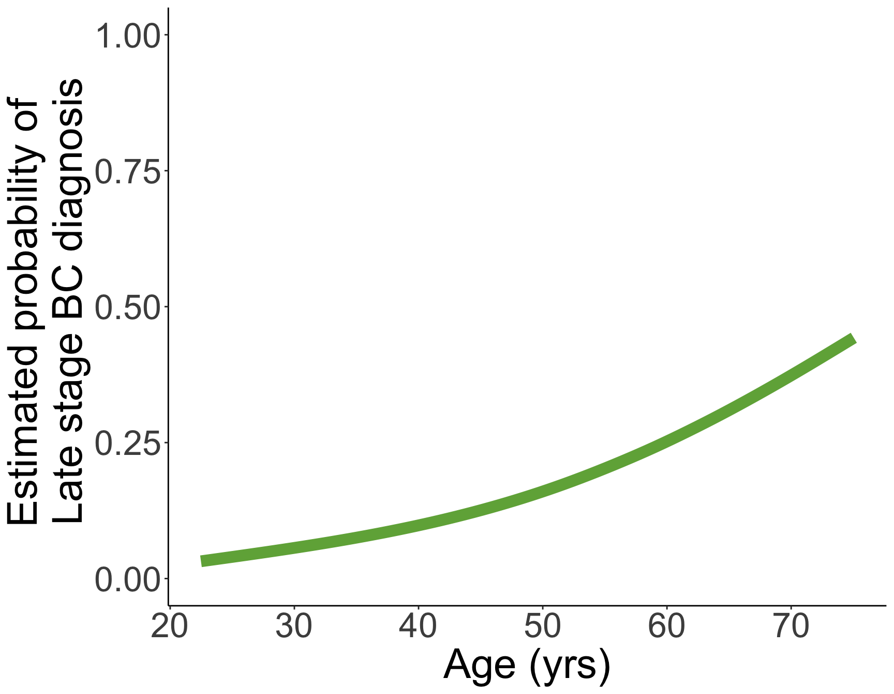
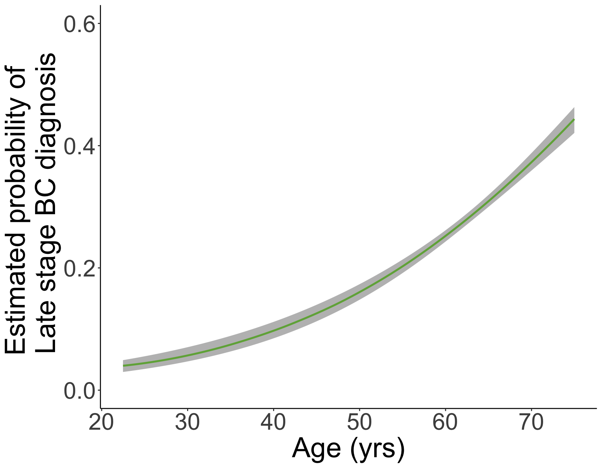
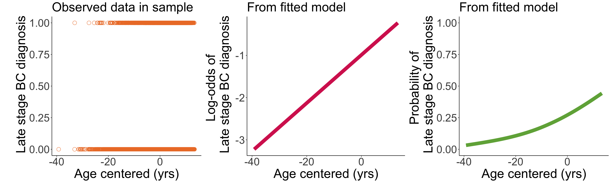

2025-04-16
Make transformation between logistic regression and estimated/predicted probability.
Construct confidence interval for predicted probability.
Visualize the predicted probability (and its confidence intervals).
bc_reg = glm(Late_stage_diag ~ Age_c, data = bc, family = binomial)
tidy(bc_reg, conf.int=T) %>% gt() %>% tab_options(table.font.size = 38) %>%
fmt_number(decimals = 3)| term | estimate | std.error | statistic | p.value | conf.low | conf.high |
|---|---|---|---|---|---|---|
| (Intercept) | −0.989 | 0.023 | −42.637 | 0.000 | −1.035 | −0.944 |
| Age_c | 0.057 | 0.003 | 17.780 | 0.000 | 0.051 | 0.063 |
Now we want to calculate the predicted/estimated probability from the above fitted model
We will need to calculate the predicted probability and its confidence interval
Construct confidence interval for predicted probability.
Visualize the predicted probability (and its confidence intervals).
We may be interested in predicting probability of having a late stage breast cancer diagnosis for a specific age.
The predicted probability is the estimated probability of having the event for given values of covariate(s)
In simple logistic regression, the fitted model is:\[\text{logit}(\widehat{\pi}(X)) = \widehat{\beta}_0 +{\widehat{\beta}}_1X \]
We can convert it to the predicted probability: \[\widehat{\pi}\left(X\right)=\frac{\exp({\widehat{\beta}}_0+{\widehat{\beta}}_1X)}{1+\exp({\widehat{\beta}}_0+{\widehat{\beta}}_1X)}\]
We can calculate this using the the predict() function like in BSTA 512
augment() function
There are a two ways to do this:
Recall our our fitted simple logistic regression model with a continuous predictor \[\text{logit}(\widehat{\pi}(X)) = \widehat{\beta}_0 + \widehat{\beta}_1 \cdot X\]
We can first find the predicted \(\text{logit}(\widehat{\pi}(X))\) and then find the 95% confidence interval around it: \[\text{logit}(\widehat{\pi}(X)) \pm 1.96 \cdot SE_{\text{logit}(\widehat{\pi}(X))}\]
We’ll call this 95% CI: \[\left(\text{logit}(\widehat{\pi}(X)) - 1.96 \cdot SE_{\text{logit}(\widehat{\pi}(X))}, \ \text{logit}(\widehat{\pi}(X)) + 1.96 \cdot SE_{\text{logit}(\widehat{\pi}(X))} \right)\] \[\left(\text{logit}_{L}, \ \text{logit}_{U} \right)\]
Then we need to convert to the probability scale
To convert from \(\text{logit}(\widehat{\pi}(X))\) to \(\widehat{\pi}(X)\), we take the inverse logit
Thus, 95% CI in the probability scale is: \[\left(\dfrac{\exp\left[\text{logit}_{L}\right]}{1 + \exp\left[\text{logit}_{L}\right]}, \ \dfrac{\exp\left[\text{logit}_{U}\right]}{1 + \exp\left[\text{logit}_{U}\right]} \right)\]
If we meet the Normal approximation criteria, we can construct our confidence interval directly in the probability scale
We can use the Normal approximation if:
Predicting probability of late stage breast cancer diagnosis
For someone 60 years old, what is the predicted probability for late stage breast cancer diagnosis (with confidence intervals)?
Needed steps:
Calculate probability prediction
Check if we can use Normal approximation
Calculate confidence interval
Interpret results
Predicting probability of late stage breast cancer diagnosis
For someone 60 years old, what is the predicted probability for late stage breast cancer diagnosis (with confidence intervals)?
Predicting probability of late stage breast cancer diagnosis
For someone 60 years old, what is the predicted probability for late stage breast cancer diagnosis (with confidence intervals)?
We can use the Normal approximation if: \(\widehat{p}n = \widehat{\pi}(X)\cdot n > 10\) and \((1-\widehat{p})n = (1-\widehat{\pi}(X))\cdot n > 10\).
We can use the Normal approximation!
Predicting probability of late stage breast cancer diagnosis
For someone 60 years old, what is the predicted probability for late stage breast cancer diagnosis (with confidence intervals)?
3a. Calculate confidence interval (Option 1: logit scale, we could skip previous step)
Predicting probability of late stage breast cancer diagnosis
For someone 60 years old, what is the predicted probability for late stage breast cancer diagnosis (with confidence intervals)?
3b. Calculate confidence interval (Option 2: with Normal approximation)
Predicting probability of late stage breast cancer diagnosis
For someone 60 years old, what is the predicted probability for late stage breast cancer diagnosis (with confidence intervals)?
For someone who is 60 years old, the predicted probability of late stage breast cancer diagnosis is 0.252 (95% CI: 0.243, 0.261).
Predicted probability is NOT our predicted outcome
We cannot interpret it as the predicted \(Y\) for individuals with certain covariate values
Example: our predicted probability does not tell us if one individual will or will not be diagnosed with late stage breast cancer
The predicted probability is the estimate of the mean (i.e., proportion) of individuals at a certain age who are diagnosed with late stage breast cancer
We can use the predicted/estimated probability to predict the outcome
If you ever need to predict the outcome itself (from logistic regression with binary outcome):
If outcome is something like counts, then we would use a Poisson distribution
Make transformation between logistic regression and estimated/predicted probability.
Construct confidence interval for predicted probability.
library(boot) # for inv.logit()
prob_stage = ggplot(data = bc_aug, aes(x=Age_c + mean(bc$Age), y = inv.logit(.fitted))) +
# geom_point(size = 4, color = "#70AD47", shape = 1) +
geom_smooth(size = 4, color = "#70AD47") +
labs(x = "Age (yrs)",
y = "Estimated probability of \n Late stage BC diagnosis") +
theme_classic() +
theme(axis.title = element_text(size = 30),
axis.text = element_text(size = 25),
title = element_text(size = 30)) +
ylim(0, 1)If we are interested in seeing all the predicted probabilities across the sample’s age range
Note that the probabilities do not need to fill the full range of 0 to 1.

newdata2 = data.frame(Age_c = seq(min(bc$Age_c), max(bc$Age_c), by = 0.1))
pred2 = predict(bc_reg, newdata = newdata2, se.fit = T, type = "link")
LL_CI1 = pred2$fit - qnorm(1-0.05/2) * pred2$se.fit
UL_CI1 = pred2$fit + qnorm(1-0.05/2) * pred2$se.fit
with_CI = data.frame(Age = newdata2$Age_c + mean(bc$Age), # back to age
pred = inv.logit(pred2$fit),
LL = inv.logit(LL_CI1),
UL = inv.logit(UL_CI1))prob_stage_CI = ggplot(data = with_CI, aes(x = Age)) +
geom_ribbon(aes(ymin = LL, ymax = UL), fill = "grey") +
geom_smooth(aes(x=Age, y = pred), size = 1, color = "#70AD47") +
labs(x = "Age (yrs)",
y = "Estimated probability of \n Late stage BC diagnosis") +
theme_classic() +
theme(axis.title = element_text(size = 30),
axis.text = element_text(size = 25),
title = element_text(size = 30)) +
ylim(0, 0.6)
\[\text{logit}(\widehat{\pi}(Age)) = -0.989 + 0.057 \cdot Age\]
\[\widehat{\pi}(Age) = \dfrac{ \exp \left[-0.989 + 0.057 \cdot Age \right]}{1+\exp \left[-0.989 + 0.057 \cdot Age \right]}\]

These two visualizations will be helpful when we discuss interactions!
Make transformation between logistic regression and estimated/predicted probability.
Construct confidence interval for predicted probability.
Visualize the predicted probability (and its confidence intervals).
Lesson 7: Prediction and Visualization in Simple Logistic Regression